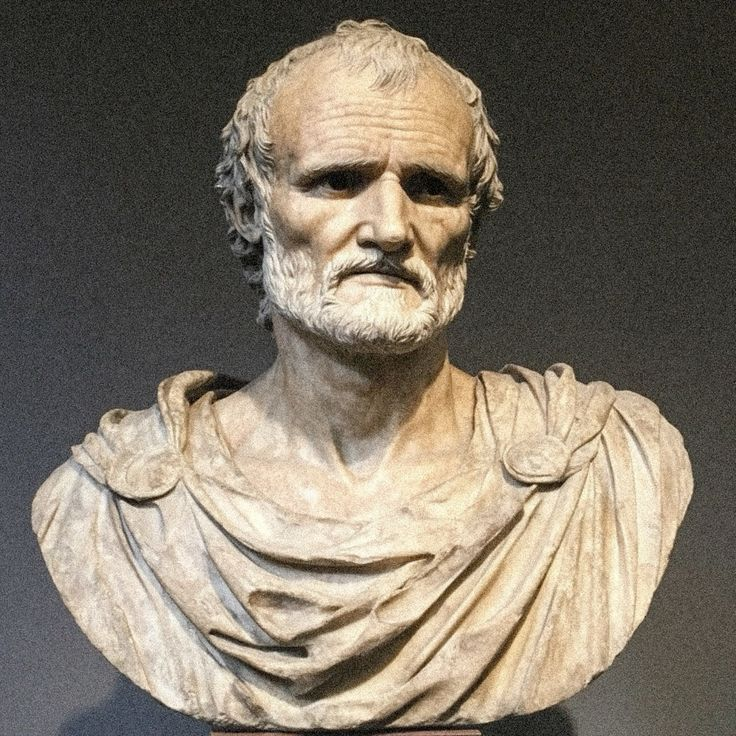

Who Was Seneca?
Seneca, known formally as Lucius Annaeus Seneca, was a Roman Stoic philosopher, statesman, and playwright who lived from approximately 4 BCE to 65 CE. He is remembered as one of the most widely read and stylistically accomplished practitioners of Roman Stoicism, whose personal letters and philosophical essays combine rigorous ethical reflection with elegant, memorable prose that continues to attract readers well beyond specialist academic philosophy.
Seneca is especially associated with applying Stoic ethical principles directly to the practical challenges of everyday Roman elite life, addressing themes including the proper use of time, the destructive power of uncontrolled anger, the correct relationship between virtue and material wealth, and the philosophical preparation required to face death with genuine equanimity rather than fear.
Seneca's own biography proved remarkably dramatic and ultimately tragic, as he rose to become an enormously wealthy and politically influential tutor and advisor to the young emperor Nero, before eventually being forced by his former student to take his own life, a death Seneca conducted deliberately in accordance with the Stoic principles he had spent his career teaching.
Because Seneca's considerable personal wealth and political entanglement with imperial power stand in evident tension with the Stoic ideals of simplicity and detachment he consistently taught, scholars continue to debate how to assess this apparent contradiction. His importance nonetheless remains considerable, since his extensive philosophical writing remains among the most accessible, psychologically insightful, and continuously influential bodies of ancient Stoic thought.
Seneca: Quick Facts
- Name — Lucius Annaeus Seneca (Seneca the Younger)
- Period — c. 4 BCE–65 CE
- Born in — Corduba, Hispania (present-day Córdoba, Spain)
- Died in — Rome
- Associated with — Roman Stoicism and practical ethics
- Known for — Letters to Lucilius and On the Shortness of Life
- Major works — Letters to Lucilius, On the Shortness of Life, and On Anger
- Political role — Tutor and advisor to the emperor Nero
- Notable events — Exile to Corsica and forced suicide under Nero
- Historical importance — One of the most widely read Roman Stoic philosophers
Seneca and Roman Stoicism

Seneca's philosophical career unfolded during the early decades of the Roman Empire, a period in which Stoicism, originally developed within Hellenistic Athens, had become firmly established as a leading philosophical framework among the Roman political and intellectual elite, valued particularly for its practical ethical guidance suited to lives of considerable public responsibility and political risk.
This period of Roman history was also marked by significant political instability and danger for prominent public figures, as the reigns of emperors including Caligula, Claudius, and Nero involved considerable court intrigue, sudden shifts in imperial favor, and real physical danger for anyone closely associated with imperial power, circumstances that directly shaped the course of Seneca's own dramatic and ultimately fatal political career.
Seneca's position within this volatile political environment, combining serious philosophical authorship with direct personal involvement in the highest levels of Roman imperial politics, gives his philosophical writing a distinctive practical urgency, reflecting genuine firsthand experience of the very political dangers and ethical challenges his philosophy sought to help readers navigate.
Seneca's Early Life and Education
Seneca was born in Corduba, in the Roman province of Hispania, into a wealthy and well-connected family; his father, Seneca the Elder, was himself a noted rhetorician, providing young Seneca with early exposure to rigorous training in both rhetoric and philosophy that would shape his subsequent literary and philosophical career.
Seneca received his philosophical education in Rome, studying under teachers associated with both Stoic philosophy and the more ascetic Pythagorean and Sextian traditions, an eclectic early education that likely contributed to the distinctive practical and psychologically attentive character of his mature philosophical writing, which draws on multiple ancient philosophical traditions beyond strict Stoic orthodoxy alone.
Seneca began a public career in Roman politics and law during his younger years, gradually establishing the reputation and connections that would eventually lead to his significant, and ultimately perilous, later involvement at the very center of Roman imperial politics under successive emperors.
Seneca's Exile to Corsica
Seneca was exiled to the island of Corsica in 41 CE, early in the reign of the emperor Claudius, after being accused of adultery with Julia Livilla, a sister of the former emperor Caligula, a politically charged accusation that removed Seneca from Roman public life for approximately eight years during this period of his career.
During this extended period of exile, Seneca continued his philosophical writing, producing several significant works, including consolatory essays addressed to family members reflecting on loss, exile, and the proper Stoic response to apparent personal misfortune, themes that connected directly to his own immediate lived experience of political disgrace and displacement.
Seneca's eventual recall from exile in 49 CE, arranged through the influence of the emperor Claudius's wife Agrippina, marked a dramatic turning point in his career, as he was subsequently appointed to tutor Agrippina's young son, the future emperor Nero, beginning the most politically significant and ultimately consequential phase of Seneca's entire life.
Seneca as Tutor and Advisor to Nero
Following his recall from exile, Seneca became tutor to the young Nero, and when Nero eventually became emperor in 54 CE, Seneca rose to become one of his most influential political advisors, exercising considerable practical authority over Roman imperial administration during the early years of Nero's reign, a period generally regarded by historians as comparatively well governed.
Seneca's political influence gradually diminished as Nero matured and increasingly asserted his own independent authority, and Seneca eventually withdrew from active political involvement around 62 CE, attempting, with only partial success, to distance himself from the increasingly erratic and dangerous imperial court while devoting himself more fully to philosophical writing during his remaining years.
This complex relationship between Seneca and Nero, moving from influential tutor and advisor to increasingly marginalized and ultimately endangered former mentor, illustrates the considerable practical and personal risks inherent in Seneca's close proximity to Roman imperial power throughout the most significant portion of his public career.
What Did Seneca Believe?
Seneca's philosophy applies core Stoic principles directly and practically to the concrete challenges of everyday Roman life, consistently emphasizing that genuine human happiness and virtue depend entirely on the proper exercise of reason and judgment, rather than on external circumstances including wealth, political power, physical health, or social reputation.
Central to this philosophy is Seneca's sustained attention to the proper management of time, arguing that time represents the single most genuinely valuable and irreplaceable possession any person has, and that most people waste this precious and finite resource on trivial distractions, arriving at death having never genuinely lived a fully examined and philosophically engaged life.
Seneca also devoted considerable attention to the proper management of destructive emotion, particularly anger, arguing that such emotions arise from mistaken rational judgments about the value of external things and can therefore be substantially controlled and corrected through careful philosophical reflection and consistent practical discipline.
Scholars of ancient philosophy continue to debate the relationship between Seneca's considerable personal wealth and political entanglement and the ascetic simplicity his writing often recommends, but his overall philosophical contribution is consistently recognized as one of the most practically accessible and psychologically insightful bodies of Stoic thought to survive from antiquity.
Letters to Lucilius: Seneca's Epistulae Morales

Letters to Lucilius, also known by its Latin title Epistulae Morales, presents a collection of 124 philosophical letters addressed to Seneca's younger friend Lucilius, composed during the final years of Seneca's life and covering an extraordinarily wide range of practical ethical topics through a personal, conversational, and often autobiographical epistolary style.
The letters address topics including the proper use of time, the management of anger and grief, the correct attitude toward wealth and poverty, the value of philosophical study, and the proper preparation for death, consistently combining abstract Stoic principle with vivid concrete examples drawn from Seneca's own personal experience and observation of Roman society.
The Letters to Lucilius remain among the most widely read and continuously reprinted works of ancient philosophy, praised for their elegant prose style, psychological insight, and remarkably direct practical applicability to readers navigating the everyday ethical challenges of their own lives, regardless of historical distance from Seneca's original Roman context.
On the Shortness of Life: Seneca's Philosophy of Time
On the Shortness of Life presents Seneca's most concentrated and influential philosophical treatment of human time, arguing provocatively that human life is not actually short, as popular complaint commonly assumes, but that people waste such an enormous proportion of their available time on trivial pursuits, distractions, and unexamined habit that they effectively squander the genuinely ample time nature has actually provided them.
Seneca argues that time represents the one truly irreplaceable possession every person genuinely owns, since unlike material wealth, time cannot be recovered once lost or restored once spent, and he criticizes his contemporaries for guarding their material property far more carefully than they guard this far more precious and genuinely limited resource of their own remaining time.
This work remains one of Seneca's most widely read and practically influential essays, continuing to resonate with modern readers concerned about time management, distraction, and the genuine cultivation of a meaningfully examined life, and it is frequently cited as one of the clearest and most compelling ancient philosophical treatments of mortality and the proper use of finite human time.
On Anger: Seneca's Analysis of Destructive Emotion
Seneca's extended essay On Anger presents a detailed Stoic analysis of anger as a particularly destructive and irrational emotion, arguing that anger arises from a mistaken rational judgment that one has suffered a genuine wrong deserving of retaliation, a judgment Seneca considered almost always exaggerated, mistaken, or entirely unwarranted upon careful reflection.
Seneca argued that anger, unlike some other emotions Stoic philosophy treated with somewhat greater tolerance, offers no genuine benefit even in apparently justified circumstances, since it consistently clouds rational judgment, produces disproportionate and often counterproductive responses, and causes greater harm to the angry person themselves than to whoever originally provoked their anger.
This detailed analysis of anger provided practical strategies for managing and preventing this destructive emotion, including careful reflection before reacting to apparent provocations and conscious cultivation of realistic expectations about human behavior, establishing On Anger as one of the most psychologically sophisticated ancient philosophical treatments of emotional regulation.
On the Happy Life: Seneca on Virtue and Wealth
Seneca's essay On the Happy Life directly addresses the relationship between Stoic virtue and material wealth, arguing that genuine happiness depends entirely on virtue rather than external possessions, while simultaneously defending the position that a wise person may, in principle, possess considerable wealth so long as they maintain proper inner detachment from it and remain prepared to lose it without genuine distress.
This essay directly addresses contemporary criticism, likely already circulating during Seneca's own lifetime, that his considerable personal wealth stood in obvious tension with the Stoic ideals of simplicity he taught, arguing that wealth itself is philosophically indifferent, neither genuinely good nor bad, with its moral significance depending entirely on the wise person's proper inner attitude and use of it.
This defense of wealth's compatibility with Stoic virtue remains one of the most philosophically debated aspects of Seneca's broader ethical system, continuing to generate scholarly discussion concerning whether his position represents a genuine and coherent philosophical development within Stoic ethics or a more self-serving rationalization of his own considerable personal fortune.
On Providence: Seneca on Why Bad Things Happen to Good People
Seneca's essay On Providence addresses the classic philosophical problem of why apparently good and virtuous people frequently suffer significant hardship and misfortune, arguing within the broader Stoic theological framework that the universe is governed by a rational, providential divine order in which such apparent hardships actually serve a genuinely beneficial purpose.
Seneca argued that difficulty and hardship function as a kind of philosophical training or testing ground specifically for the virtuous, allowing them the opportunity to develop and demonstrate genuine courage, endurance, and wisdom that could not be cultivated or displayed under conditions of uninterrupted ease and comfort, treating adversity as an opportunity rather than a genuine evil.
This treatment of the problem of evil and suffering connects directly to Seneca's broader Stoic conviction that external circumstances, including hardship and apparent misfortune, remain fundamentally indifferent to genuine human flourishing, which depends entirely on the proper exercise of virtue regardless of the specific external circumstances a person happens to encounter.
Seneca's Tragedies: Philosophy Through Drama
Beyond his explicitly philosophical essays and letters, Seneca also composed a significant body of Roman tragedy, including plays such as Medea, Phaedra, and Thyestes, dramatic works exploring the destructive consequences of uncontrolled passion, revenge, and moral corruption through vivid and often deliberately excessive theatrical representation.
These tragedies can be read as dramatizing, in negative form, the very destructive emotional patterns that Seneca's philosophical prose works, particularly On Anger, analyze and warn against, presenting extreme theatrical examples of characters entirely overwhelmed by passion as a kind of cautionary counterpoint to the disciplined rational self- governance his philosophical writing recommends.
Seneca's tragedies exercised considerable influence on subsequent European dramatic tradition, particularly during the Renaissance, when playwrights including those working within the English tradition drew significantly on Senecan dramatic conventions, including their emphasis on rhetorical speech, violent action, and the destructive consequences of excessive passion.
Seneca on Death and Practicing Dying
Seneca consistently taught that philosophical wisdom requires sustained, deliberate reflection on death, famously advising that learning how to die properly constitutes an essential and continuous philosophical practice throughout life, rather than a task to be postponed until death's actual approach, since genuine equanimity in the face of death requires extensive prior preparation.
This teaching connects directly to Seneca's broader philosophy of time, since recognizing the constant possibility of death encourages a person to use their remaining time wisely and purposefully rather than postponing genuine philosophical engagement and meaningful living to some indefinite future period that death might arrive to foreclose entirely.
Seneca's extensive philosophical preparation for death would eventually be tested directly in his own life, when he was forced to face his own actual death under circumstances that allowed him the opportunity to demonstrate, through his own documented final conduct, the very philosophical principles he had spent decades teaching to others.
Seneca on Friendship
Seneca developed a significant philosophical treatment of friendship within his Letters to Lucilius, arguing that genuine friendship requires complete mutual trust and openness, advising that a person should carefully consider whether to admit someone as a friend but then, once that decision has been made, extend them complete trust and honest communication without reservation.
Seneca distinguished genuine philosophical friendship, grounded in shared virtue and mutual moral improvement, from more superficial social relationships motivated primarily by material advantage or social convenience, arguing that only the former type of relationship provides the genuine psychological and moral benefit properly associated with true friendship.
This treatment of friendship illustrates Seneca's broader concern with the proper cultivation of virtuous social relationships as an important component of a well-lived philosophical life, connecting his practical ethical guidance to the concrete, everyday social relationships that constitute much of ordinary human experience.
Seneca's Wealth and the Hypocrisy Charge
Seneca accumulated an extraordinarily large personal fortune during his years of political influence under Nero, including substantial property holdings and significant financial investments, a level of material wealth that stood in considerable apparent tension with the philosophical simplicity and detachment from material possessions his Stoic writing consistently recommended to his readers.
Ancient critics, including the historian Cassius Dio, directly accused Seneca of hypocrisy on precisely these grounds, suggesting that his considerable wealth and political entanglement with Nero's increasingly corrupt regime undermined the philosophical authority of his ethical teaching, a criticism that has continued to generate scholarly discussion up to the present day.
Seneca's own defense, articulated particularly in On the Happy Life, argued that Stoic philosophy does not require actual poverty but rather proper inner detachment from wealth, maintaining that a genuinely wise person could possess considerable material resources while remaining prepared to lose them without genuine philosophical distress, a defense that continues to divide scholarly opinion regarding its ultimate persuasiveness.
Seneca and the Pisonian Conspiracy
In 65 CE, Roman authorities uncovered the Pisonian conspiracy, a significant plot involving numerous prominent Romans aiming to assassinate the emperor Nero and replace him with the senator Gaius Calpurnius Piso, a conspiracy that, once discovered, resulted in severe punishment for numerous individuals connected, even loosely, to the plot.
Seneca himself was implicated in the conspiracy, though the precise extent of his actual involvement, if any, remains historically uncertain and disputed among ancient sources and modern historians alike, with some accounts suggesting his connection may have been minimal or entirely fabricated by Nero as a pretext to eliminate his increasingly inconvenient former tutor and advisor.
Regardless of the precise historical truth regarding Seneca's actual involvement, Nero used the conspiracy as justification for ordering Seneca's death, bringing to a decisive and fatal conclusion the increasingly strained relationship between the aging philosopher and his former imperial student.
Seneca's Death: An Exemplary Stoic Suicide

Following Nero's order that he take his own life, Seneca, according to the detailed account preserved by the Roman historian Tacitus, met his death with remarkable composure, deliberately conducting his final hours in a manner clearly modeled on the exemplary death of Socrates, discoursing calmly with his assembled friends even as he prepared for his own end.
Seneca's actual death proved considerably prolonged and physically difficult, requiring several different methods before he finally succumbed, including cutting his veins, taking poison, and eventually being suffocated in a steam bath, a difficult and extended process that Tacitus's account nonetheless presents as demonstrating Seneca's continued philosophical composure throughout.
This carefully documented death became one of the most historically significant examples of a philosopher directly enacting their own ethical teaching under conditions of genuine extremity, and it has continued to shape how subsequent readers understand and evaluate the practical seriousness and authenticity of Seneca's broader Stoic philosophical commitment.
Seneca Compared with Epictetus
Seneca is frequently studied alongside the later Stoic philosopher Epictetus, since both thinkers contributed significantly to the practical, ethically focused character of Roman Stoicism, though their social positions differed dramatically, with Seneca writing as an enormously wealthy Roman senator and imperial advisor while Epictetus taught as a former slave addressing students through direct spoken instruction.
Seneca's surviving philosophical writing tends toward a more polished, literary Latin prose style, often addressed to specific individual correspondents such as Lucilius, while Epictetus's teaching, preserved through his student Arrian's Greek transcription, retains the more direct, conversational, and occasionally confrontational character of live philosophical classroom instruction.
Despite these considerable differences in style and social circumstance, both philosophers shared the core conviction that philosophy must be practically applied to daily conduct, and both continue to be studied together as complementary voices within the broader tradition of Roman Stoic ethics, each offering a distinct perspective shaped by markedly different lived social experience.
Seneca Compared with Marcus Aurelius
Seneca's philosophical writing shares significant common ground with the later Meditations of the Roman emperor Marcus Aurelius, since both figures combined serious philosophical reflection with direct, substantial involvement in the practical demands of Roman political leadership, giving both bodies of work a distinctively practical orientation shaped by genuine political experience.
Where Seneca's Letters to Lucilius were composed as deliberately crafted, polished works intended for eventual publication and a broader readership, Marcus Aurelius's Meditations were apparently written as entirely private personal notes never intended for publication, giving the emperor's reflections a somewhat rawer, more immediately personal quality compared to Seneca's more consciously literary epistolary style.
This comparison between Seneca and Marcus Aurelius illustrates the considerable range of literary and personal styles found within Roman Stoic philosophical writing, even among thinkers who shared fundamentally similar underlying philosophical convictions regarding virtue, duty, and the proper Stoic response to the challenges of significant political responsibility.
Seneca's Influence on Renaissance Humanism
Seneca's philosophical and dramatic writing exercised considerable influence on the later development of Renaissance humanism, as his elegant Latin prose style and practical ethical guidance made him one of the most widely read and admired classical authors among Renaissance scholars and writers seeking models of eloquent and ethically serious classical Latin composition.
Renaissance dramatists, particularly within the developing English theatrical tradition, drew significantly on Seneca's tragedies as important models for their own dramatic composition, adapting Senecan conventions including elaborate rhetorical speech and dramatic violence into new theatrical contexts quite different from Seneca's own original Roman context.
This substantial Renaissance engagement with Seneca's work illustrates the considerable historical range of his influence, extending well beyond his immediate significance as a Roman Stoic philosopher to shape subsequent European literary and dramatic tradition across more than a millennium following his own death.
Common Misconceptions About Seneca
One persistent misconception treats Seneca's considerable personal wealth as automatically and entirely discrediting his philosophical teaching, overlooking his own explicit philosophical argument that Stoic virtue requires proper inner detachment from wealth rather than actual material poverty, a position that, whatever its ultimate persuasiveness, represents a genuine philosophical argument rather than mere unreflective hypocrisy.
Another common misconception assumes Seneca's extensive political involvement with Nero's regime was entirely voluntary and untroubled throughout, overlooking the considerable evidence, including Seneca's own attempts to withdraw from active political life during his later years, suggesting a more complicated and increasingly uncomfortable relationship with imperial power than a simple picture of willing complicity would suggest.
A further misconception treats Seneca's tragedies as merely incidental to his philosophical reputation, overlooking how directly these dramatic works engage with and dramatize the very psychological and ethical themes, particularly the destructive power of uncontrolled passion, that occupy such a central place within his explicitly philosophical prose writing.
Seneca's Legacy in Modern Stoicism
Seneca's philosophical legacy extends across an unusually wide range of subsequent intellectual and literary history, with his Letters to Lucilius and On the Shortness of Life remaining among the most widely read and continuously reprinted works of ancient philosophy, valued for their elegant prose and remarkably direct practical applicability.
His practical, accessible approach to Stoic ethics has proven especially significant for the substantial contemporary revival of interest in Stoic philosophy often called modern Stoicism, which draws extensively on Seneca's specific formulations, particularly his treatment of time, anger, and death, as practical resources for resilience in modern daily life.
Today, Seneca is widely recognized as one of the most historically significant and enduringly readable philosophers of the ancient world, whose writing continues to shape not only academic philosophy but contemporary self-help literature and popular philosophical discussion of time management, emotional regulation, and mortality.
Seneca: Main Philosophical Ideas
Because Seneca's philosophical output spans letters, essays, and drama, his central ideas are often summarized under a small number of key themes drawn from across his extensive surviving body of work.
The Value of Time
Time is our only truly irreplaceable possession, and most people waste it on trivial distractions rather than genuine living.
Managing Destructive Emotion
Anger arises from mistaken judgments about wrongs suffered and can be substantially controlled through careful philosophical reflection.
Wealth and Virtue
A wise person may possess considerable wealth so long as they maintain proper inner detachment and readiness to lose it.
Providence and Hardship
Apparent misfortune serves as a training ground allowing the virtuous to develop and demonstrate genuine courage and wisdom.
Practicing Death
Genuine philosophical wisdom requires continuous reflection on death throughout life rather than postponing preparation until death's approach.
What Do We Actually Know About Seneca's Philosophy?
Because Seneca's extensive philosophical writing survives in considerable detail, alongside substantial historical documentation from Roman historians including Tacitus, his biography and career are relatively well established for an ancient figure, though certain specific details, including the precise extent of his involvement in the Pisonian conspiracy, remain historically uncertain.
Relatively Well-Attested
- Seneca was born in Corduba and educated in Rome in rhetoric and philosophy.
- He was exiled to Corsica in 41 CE and recalled in 49 CE to tutor the young Nero.
- He served as a significant political advisor during the early years of Nero's reign.
- He authored Letters to Lucilius, On the Shortness of Life, and several tragedies.
- He was ordered to take his own life in 65 CE following the Pisonian conspiracy.
Areas of Ongoing Scholarly Debate
- The precise extent, if any, of Seneca's actual involvement in the Pisonian conspiracy.
- How to reconcile Seneca's considerable personal wealth with his Stoic teaching on the proper attitude toward material possessions.
- How accurately Tacitus's detailed account of Seneca's death reflects the actual historical events.
Why Is Seneca Important in Philosophy?
Seneca is important because he produced some of the most practically accessible, psychologically insightful, and elegantly written expressions of Stoic philosophy to survive from antiquity, directly shaping the subsequent development of Roman Stoicism and continuing to offer widely applicable guidance for readers today.
His philosophical legacy raises a fundamental question that remains central to ethics: Can genuine philosophical virtue coexist with considerable material wealth and political power, or does authentic Stoic wisdom require a degree of material simplicity that Seneca's own life failed to achieve?
Seneca's importance therefore does not depend on resolving this ongoing debate about the consistency between his teaching and his life. His significance comes from his role in producing some of the most enduringly readable and practically useful philosophical writing in the entire Stoic tradition, a legacy that continues to shape ethics and popular philosophy today.
Seneca Explained Simply
Seneca was a Roman Stoic philosopher, statesman, and playwright who tutored the emperor Nero and wrote extensively on how to live well, addressing the proper use of time, the control of anger, the correct attitude toward wealth, and how to face death with genuine equanimity.
Instead of treating philosophy as an abstract academic pursuit, Seneca applied Stoic principles directly to the practical challenges of Roman elite life, and when Nero eventually ordered him to take his own life, Seneca met his death with the same composure his writing had spent decades recommending to others.
- Philosopher: Seneca (Lucius Annaeus Seneca)
- Period: c. 4 BCE–65 CE
- Tradition: Roman Stoicism
- Major works: Letters to Lucilius and On the Shortness of Life
- Central concern: Applying Stoic virtue to practical daily life
- Notable role: Tutor and advisor to the emperor Nero
A Principle Central to Seneca's Philosophy
“It is not that we have a short time to live, but that we waste a lot of it.”
Frequently Asked Questions About Seneca
Who was Seneca?
Seneca was a Roman Stoic philosopher, statesman, and dramatist whose Letters to Lucilius and On the Shortness of Life developed a practical philosophy of time, emotion, and virtue, and who served as tutor and advisor to the emperor Nero.
What is On the Shortness of Life about?
On the Shortness of Life argues that life is not actually short, but that people waste so much of their limited time on trivial pursuits and distractions that they arrive at death having never truly lived, since time is our only genuinely irreplaceable possession.
Why was Seneca forced to commit suicide?
Seneca was ordered by the emperor Nero, his former student, to take his own life in 65 CE after being implicated, likely unjustly, in the Pisonian conspiracy to assassinate Nero, and he died in a manner modeled deliberately on the exemplary death of Socrates.
What are Letters to Lucilius?
Letters to Lucilius, also called the Epistulae Morales, is a collection of 124 philosophical letters addressed to Seneca's friend Lucilius, covering a wide range of practical Stoic ethical topics.
How did Seneca defend having so much wealth?
In On the Happy Life, Seneca argued that Stoic virtue requires proper inner detachment from wealth rather than actual poverty, meaning a wise person may possess wealth while remaining prepared to lose it without distress.
What is Seneca's philosophy of anger?
In On Anger, Seneca argued that anger arises from mistaken judgments about suffered wrongs and offers no genuine benefit, since it clouds rational judgment and causes disproportionate harm.
Did Seneca write plays?
Yes, Seneca wrote Roman tragedies including Medea, Phaedra, and Thyestes, dramatizing the destructive consequences of uncontrolled passion and revenge.
How is Seneca different from Epictetus?
Seneca wrote as a wealthy Roman senator in polished literary prose, while Epictetus taught as a former slave through direct, conversational instruction later transcribed by his student Arrian.
What was Seneca's relationship with Nero?
Seneca tutored the young Nero and became an influential political advisor during the early years of his reign, before their relationship grew strained and Nero eventually ordered Seneca's death.
Why is Seneca important today?
Seneca remains important because his practical Stoic writing on time, anger, and death continues to influence modern Stoicism, self-help literature, and popular philosophy on resilience.
Related Thinkers
Seneca belongs to the wider tradition of Stoic and ancient Greco-Roman philosophy. Explore thinkers who shaped and responded to many of the same ethical questions.
Philosophy Branches Connected to Seneca
Seneca's philosophical legacy is particularly important for ethics, where philosophers investigate virtue and the good life, and for aesthetics, given his significant contribution to Roman tragedy.
Why Seneca Still Matters
Seneca did not simply repeat inherited Stoic doctrine; he tested it directly against the extraordinary pressures of Roman imperial politics, producing a body of philosophical writing notable for its psychological depth, literary elegance, and remarkable practical applicability to readers facing very different circumstances many centuries later.
Yet the questions associated with Seneca remain fundamental to philosophy: How should we use our limited time? Can wealth and virtue genuinely coexist? What does it mean to prepare for death throughout the whole course of life?
The philosophy of practical virtue he developed across a dramatic and ultimately tragic career transformed these questions into some of the most enduringly readable and influential contributions to Stoic thought. His emphasis on time, emotional discipline, and the calm acceptance of death made Seneca one of the most significant and widely read philosophers of the ancient world.
Explore Great Philosophers